The first ten minutes of Thurbox — from an empty screen to a coding agent running on its own git worktree, and the handful of keys you will use every day.
Every screenshot below is the real TUI, captured by driving it through this exact sequence
(scripts/demo/record-tutorial.sh in the repository). The paths in them
(/tmp/tutorial-home/…) come from the throwaway sandbox the capture runs in;
yours will be your own home.
Install Thurbox. The installer puts thurbox, thurbox-cli,
fleet and runtime-mux in ~/.local/bin:
curl -fsSL https://raw.githubusercontent.com/Thurbeen/thurbox/main/scripts/install.sh | shWindows and the other routes are on the Installation page. You also need:
thurbox-cli doctor checks all of this and prints a fix for each missing piece.
Fleet manages every session, and its manager, fleet up, runs as a user service. Set
Fleet up and start that service once:
fleet init
systemctl --user start fleet.service
thurbox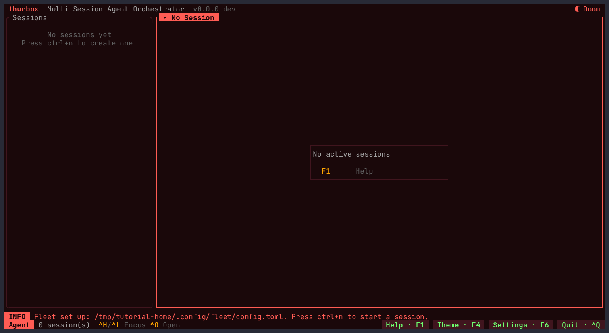
Two panes between two bars: the session list on the left, the agent terminal on the right, and the keys you need on the footer.
Thurbox never starts, restarts or sets up Fleet. While no manager runs, the status line says
Fleet not running · systemctl --user start fleet.service, or
no Fleet config · fleet init before fleet init ran.
Ctrl+N — open the creation flow
The flow first asks where the session runs: a place of Fleet's runtime. A fresh
setup has one, local, which is this machine.
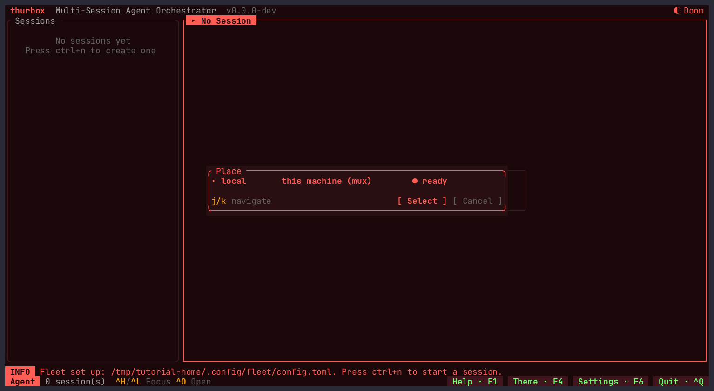
With several Fleets in settings.toml, a Fleet step comes before this one
(Several Fleets).
The repo step opens with its search focused: type any part of a repository's path and the list narrows to the fuzzy matches, best first.
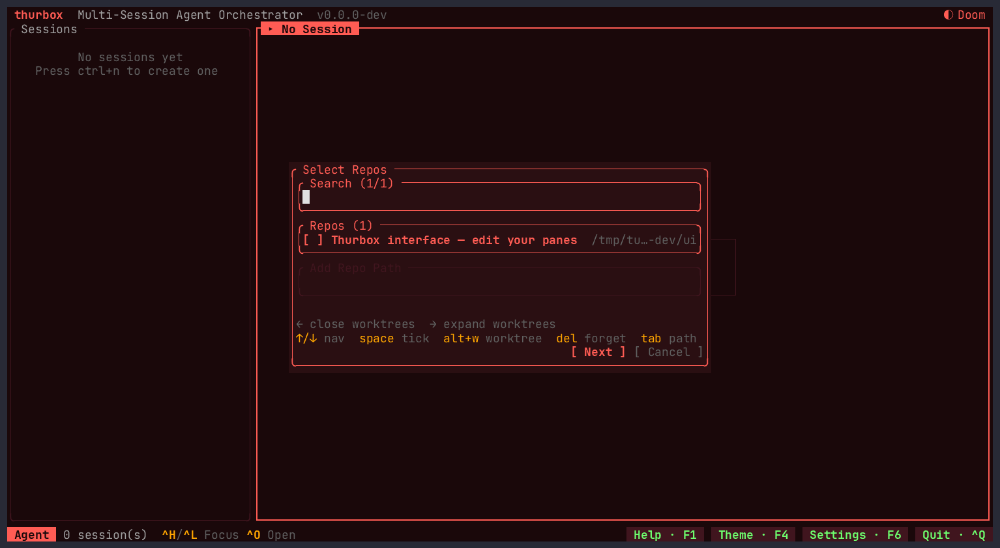
The list is Thurbox's repo memory — the repositories you have used before. The one row already there is your own interface directory, offered because editing the panes is a thing you might want a session for.
To add a repository, press Tab to move to the Add Repo Path field and
type a path. ~ is expanded for you. The field starts at the deepest directory all
your remembered repositories share (home, while there are none), so a bare name lands next to
them; typing / or ~ first replaces it with a path of your own.
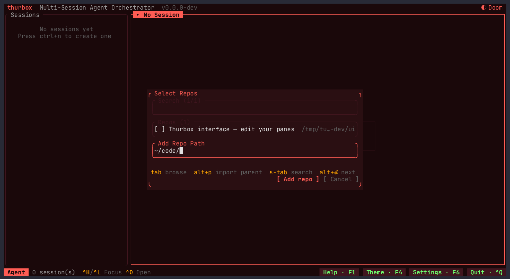
Two ways to finish:
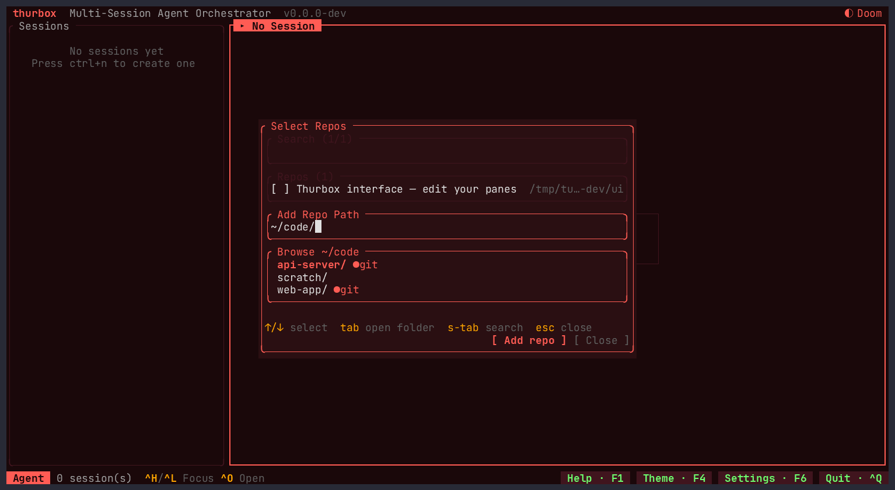
~/code. ↑/↓ move; Enter on a
●git row picks it, on a plain folder descends into it.
Either way the repository lands in memory, ticked — and stays there for next time.
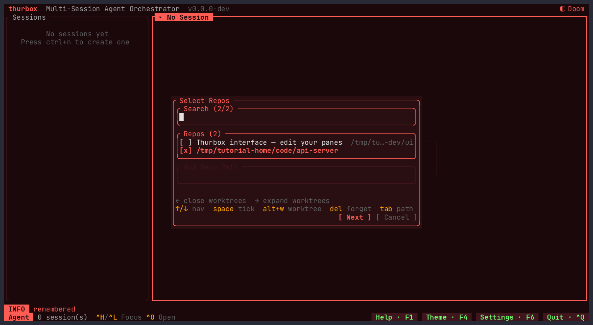
The footer names the rest. Letters always go to the search, so the list's own keys are ones you cannot type:
| Key | Does |
|---|---|
| ↑ / ↓ | Move the cursor |
| Space | Tick a repository ([x]); every ticked one goes into the session |
| Alt+W | Give it a worktree of its own ([wt]) |
| → / ← | Open or close a repository's existing worktrees |
| Enter | Go on with the ticked repositories, or the one under the cursor |
| Del / Alt+D | Forget a remembered repository |
| Alt+P | Import a folder of repositories at once — type a parent path, press it, and every git subdirectory is added under one header |
| Esc | Clear the search; a second Esc closes the flow |
| Tab | Move between the search and the path field |
A ticked repository runs as it is unless you press Alt+W on it. Then it
gets a git worktree of its own ([wt]), and the agent never works in
your checkout.
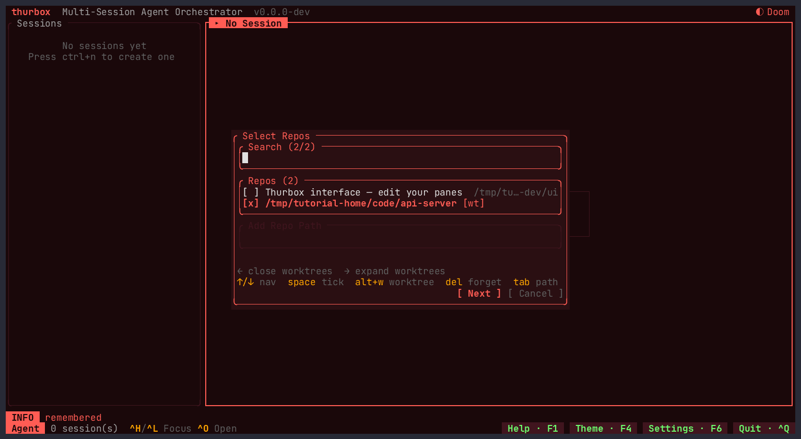
Two more questions follow. Base Branch asks what the new branch starts from, with the repository's default branch under the cursor:
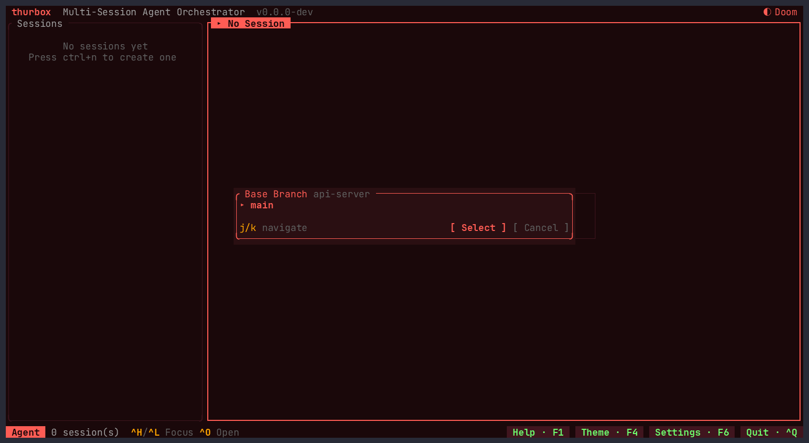
Branch Name comes after the session's name, prefilled from it
(Fix tooltips becomes fix-tooltips). A branch that exists is checked out.
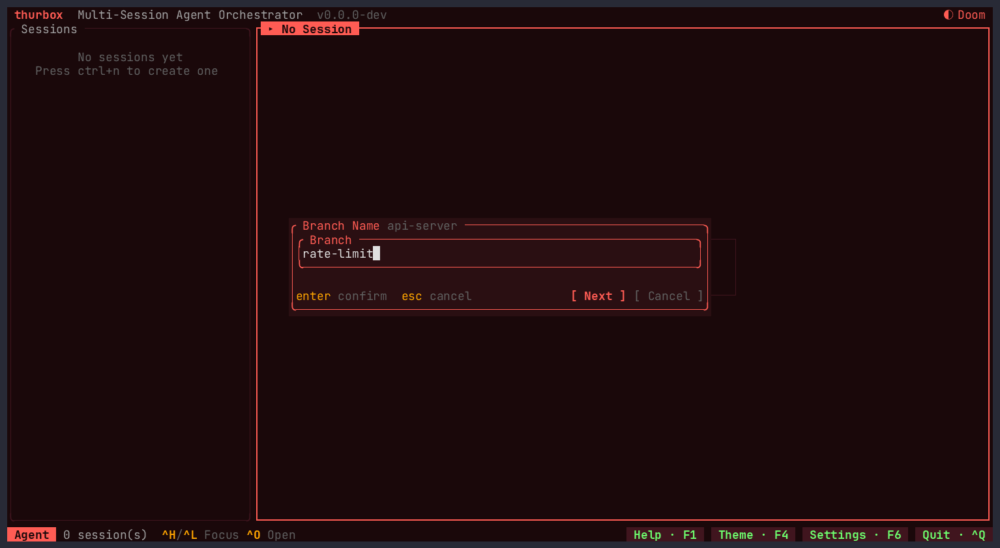
Tick several repositories and the session spans them all, one worktree each on the same branch. Fleet's runtime makes each worktree on the place, so there is nothing to configure. A directory that is no git repository runs as it is.
Name the session after the work, not the tool — the list reads as a backlog that way. Enter on an empty field accepts the suggested name (the repository's own), so you can press straight through.
Then the agent: the harnesses the Fleet offers (fleet version --json lists them). Pick
one whose CLI is installed where the session runs.
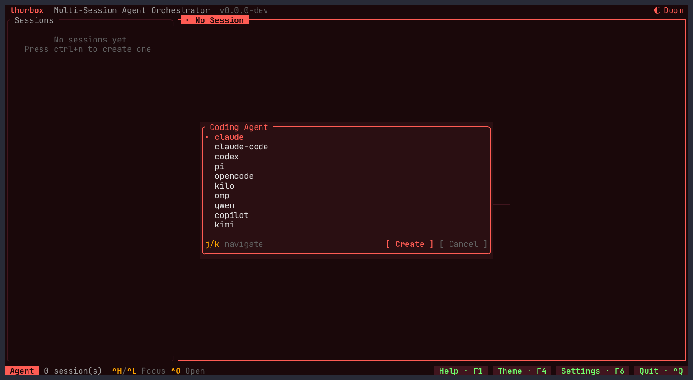
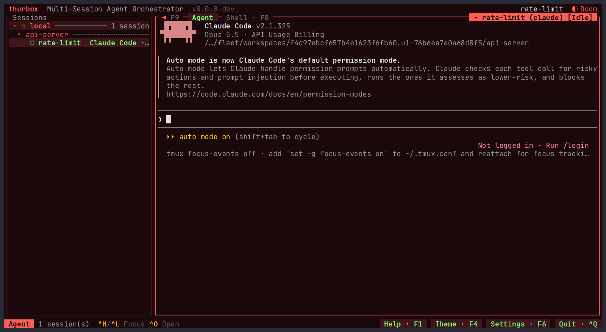
local) and its repository, with
its status dot
Press Ctrl+Q whenever you like: it detaches. Fleet keeps every agent running,
and relaunching thurbox puts you back where you were — after a crash or a week
away. After a reboot, Fleet revives the sessions of unfinished Tasks once fleet up runs
again.
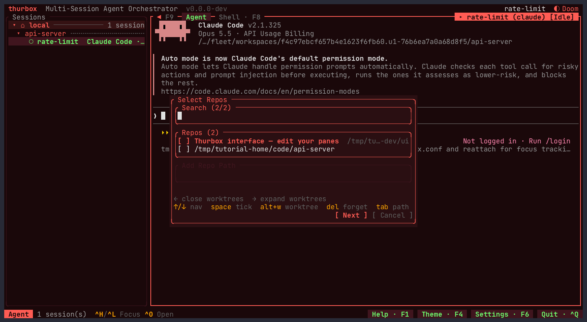
That is the shape of a working day — one session per piece of work, each on its own branch, all alive at once.
The authoritative list is F1 (or Ctrl+G), which renders the live key registry, so it can never drift from what is actually bound. Every chord in it is rebindable from that screen; the full reference is Keybindings.
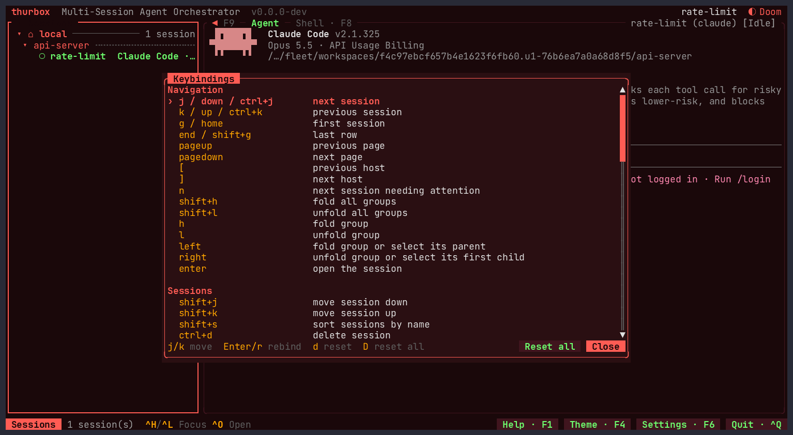
| Key | Action |
|---|---|
| Ctrl+N | New session |
| Ctrl+J / Ctrl+K | Select the next / previous session |
| Ctrl+H / Ctrl+L | Move focus between panes — the way out of a focused agent |
| Ctrl+/ | Search sessions and the text on their screens |
| Ctrl+O | Open the session's directory in your editor |
| Ctrl+T or F8 | A shell in the session's directory |
| Ctrl+E | Rename the session (with the list focused — in a terminal it is end-of-line) |
| Ctrl+D | Confirm deleting the session (for good: Fleet keeps no undo) |
| Ctrl+Y or F4 | Theme picker — 36 palettes |
| Ctrl+, or F6 | Settings — ] for the Interface tab |
| F10 | Reload the interface from disk |
| Ctrl+Q | Quit, leaving every agent running |
Ctrl+/ is the one to remember when the list gets long: it matches names, agents, branches and repositories — and the text on each session's screen, which is how you find the session with the error in it. Matches highlight inside the panes rather than being reprinted.
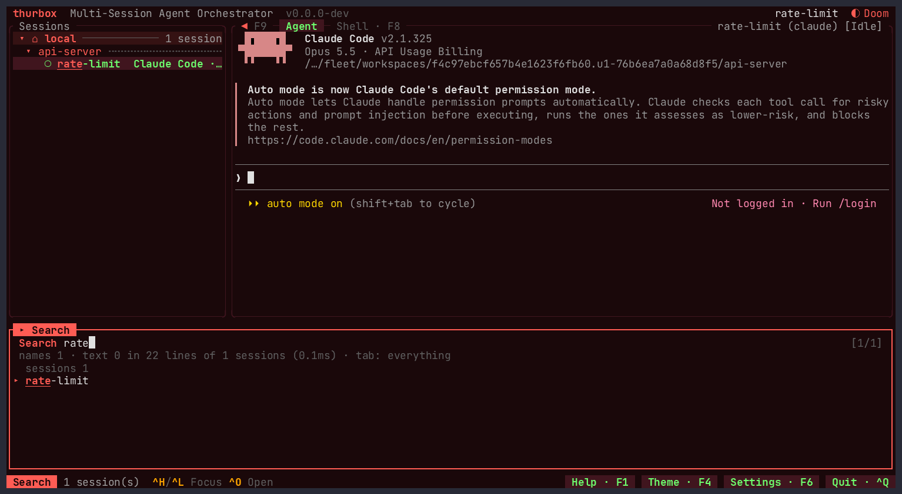
Every session is a Fleet Task, so fleet drives the same sessions with no TUI, against the
same store — anything you do here shows up in a running Thurbox within a tick, and the other way
round. Each command prints JSON.
# What is running
fleet list task
fleet get task docs # one Task, its spec and status
# Start one headlessly: an interactive Task over a directory
echo '{"apiVersion":"fleet/v1alpha1","kind":"Task",
"metadata":{"name":"docs","labels":{"thurbox.dev/name":"docs"}},
"spec":{"harness":"claude",
"workspace":["file:///home/me/code/web-app"],"dispatch":true}}' \
| fleet apply --create-only -f -
# Talk to one
fleet send docs "run the tests and fix what fails"
# Clean up
fleet delete task docs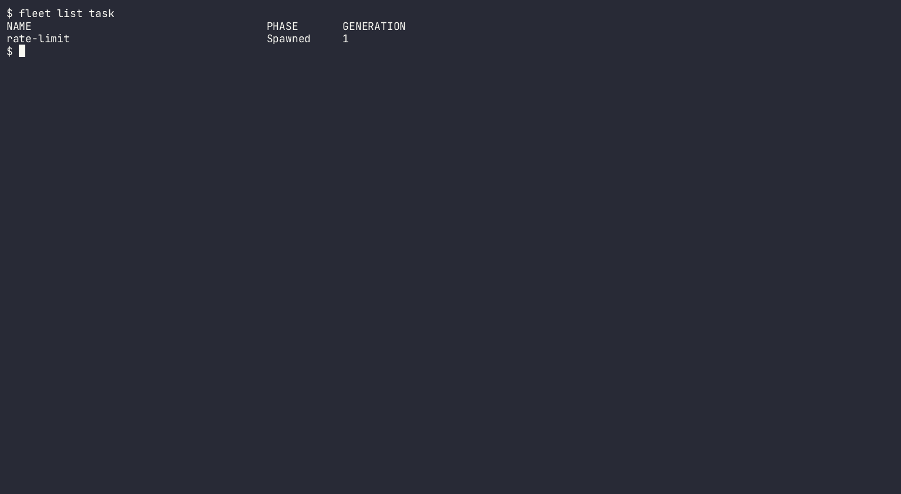
thurbox-cli keeps what is the interface's own: thurbox-cli doctor checks the
setup, thurbox-cli config show prints every resolved path, thurbox-cli plugin
dir prints the interface directory, and thurbox-cli --help lists the rest.
[fleets] in settings.toml; its sessions run there while the TUI stays
here (Configuration).
The screenshots on this page are generated. Regenerate them from a checkout with
scripts/demo/record-tutorial.sh, which drives the real TUI through the steps above.